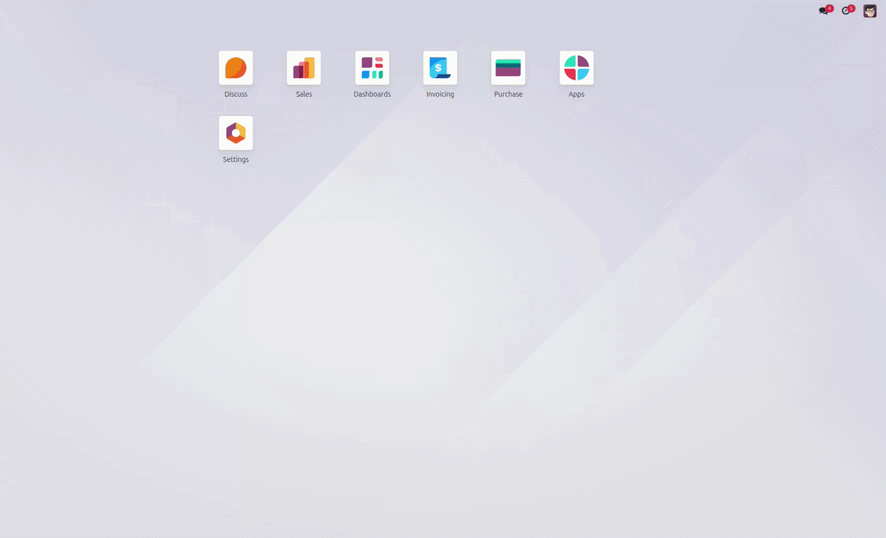

Extend the Odoo Command Palette with a configurable, server-side record search. Type a record name or reference, receive matching records, and open the selected record directly in its form view.

The module turns the Command Palette into a cross-model navigation layer while keeping search configuration and access control on the Odoo server.
Users can search configured business records directly from the global Command Palette instead of manually navigating menus and list views.
Administrators choose which Odoo models participate in the search using the Command Palette configuration settings.
Selecting a result opens the corresponding record form using its model and record ID, reducing navigation steps.
Multiple configured models can appear under a dedicated Records category in the same Command Palette.
The server checks model read permissions and performs searches in the current user environment rather than using unrestricted sudo access on target records.
Minimum search length, 250 ms debounce, per-model limits, and a global result cap keep interactive searches bounded.
The experience is intentionally short: open the palette, type enough of a record name, review the Records category, and open the record.
Use the Odoo Command Palette from the normal keyboard or UI entry point.
Type at least two characters, for example p00018.
The client waits 250 ms after typing stops, then calls the Odoo ORM method.
Matching records are added to the dedicated Records category with model information.
Selecting a result executes an Odoo window action and opens the record form.
The implementation connects Odoo configuration, the Python search service, the ORM RPC layer, and the Command Palette UI.
When the user types /p00018, Odoo's namespace processing can strip the slash namespace so the custom provider receives p00018 as the search value.
User types
↓
debounceSearch(value)
↓
processSearchValue(value)
↓
setCommands(namespace, { searchValue })
↓
searchRecords(searchValue)
↓
250 ms debounce + sequence check
↓
ORM RPC
↓
search_records(searchValue)
↓
Records category
↓
ActionService → record form
The Python service loads the configured models,
checks read access, performs
name_search(), and returns a
bounded normalized result set.
search_records(search_value)
↓
validate minimum length
↓
read configured model IDs
↓
for each configured model
↓
check read access
↓
name_search(name, operator="ilike")
↓
normalize result payload
↓
return up to 100 records
Each layer has a focused responsibility, making the module easier to configure, maintain, debug, and extend.
set_values() stores selected
model IDs as JSON.
get_values() restores them into
the settings field.
command.palette.record.search.search_records().
ir.config_parameter.
name_search().
searchRecords() debounces typing
and tracks a search sequence.
description / record name.
The behavior is controlled by a small number of explicit limits and settings.
| Area | Current implementation | Purpose |
|---|---|---|
| Searchable models | Many2many ir.model |
Defines which models can participate in global record search. |
| Minimum input | 2 characters | Avoids unnecessary server requests for very short values. |
| Client debounce | 250 ms | Groups rapid keystrokes into fewer RPC calls. |
| Per-model limit | 10 records | Prevents one model from consuming the entire result set. |
| Total limit | 100 records | Bounds payload and Command Palette result volume. |
| Search method |
name_search() +
ilike
|
Uses the model's normal Odoo name-search behavior. |
| Result category | Records | Separates business-record results from standard commands. |
| Open behavior |
ir.actions.act_window
|
Opens the exact model/record form in the current window. |
The configuration is read through sudo because it is stored in system configuration, while target record searches run in the current user's environment.
check_access_rights("read")
before searching a configured model.
The search is intentionally constrained at multiple points in the request lifecycle.
No record RPC is issued when the normalized value contains fewer than two characters.
The frontend waits 250 ms after typing activity before executing the ORM call.
Only 10 results are requested from each configured model.
The backend stops once the combined result list reaches 100 records.
Searches are associated with sequence numbers so obsolete responses can be discarded.
Commands are created from returned matches rather than preloading every record.
Users can move from intent to record with fewer clicks and fewer intermediate views.
The same search endpoint can support any configured model that exposes normal Odoo name-search behavior.
Adding or removing a model changes the searchable scope without changing the core search algorithm.
Every result carries its model and record ID, allowing a standard Odoo window action.
The dedicated Records category keeps business data separate from standard commands.
The result payload can later be extended with icons, metadata, breadcrumbs, or custom actions.
name_search(..., operator="ilike"),
so a value such as p00018 is intended to
return names matching that search term.
A value such as 18 can match names
containing that sequence, but it should not be expected
to return unrelated values such as P00008
merely because they have similar numeric patterns.
Fuzzy ranking would be a separate enhancement.
searchRecords() sequence check
protects the record-search response from becoming obsolete.
For strict end-to-end ordering, the surrounding
setCommands() flow can also check the same
sequence after awaited operations before mutating
state.commands.